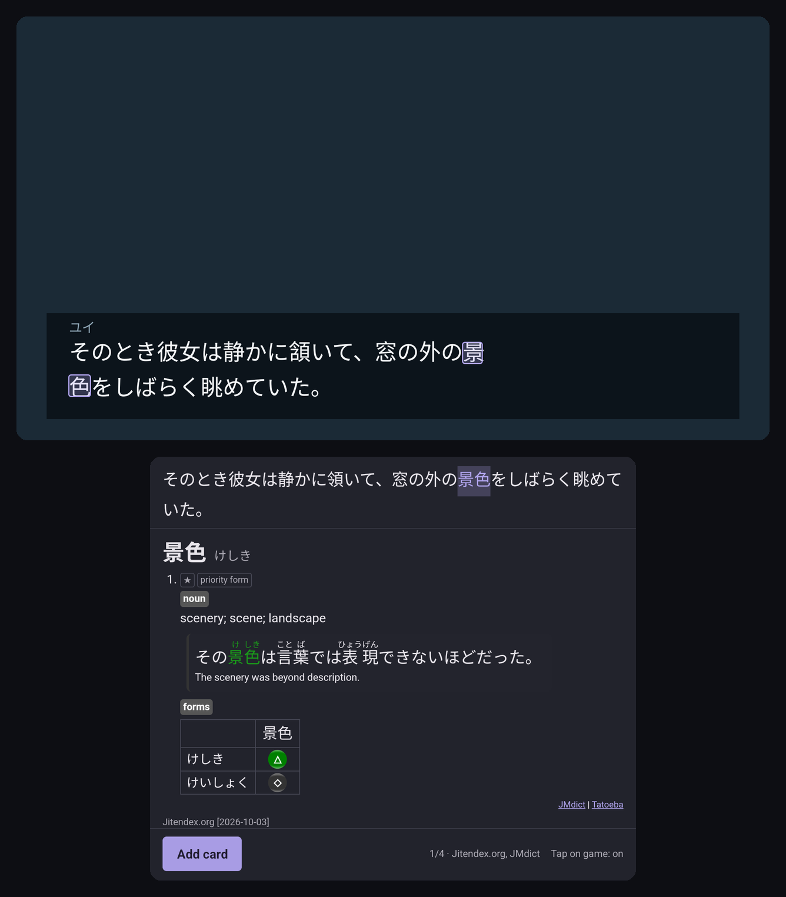
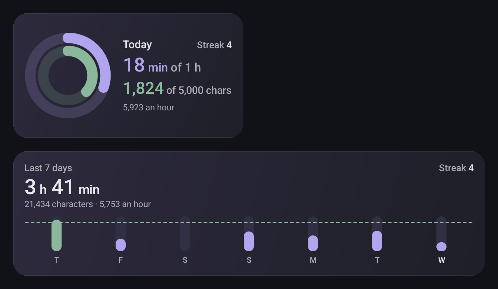

Contents 目次
- Before you start1
- On the AYN Thor2
- How the game is read3
- Controls4
- Making cards5
- Records6
- Dictionaries7
- Caution8
Before you start はじめに
Get the app
Download the arm64 APK from the latest release. To get updates, add github.com/bee-san/LearnFromGames to Obtainium. Android 13 or newer.Open it once
Set-up fetches the starter dictionaries (about 180 MB, and it can wait for Wi-Fi) and the text reader.Turn on its accessibility service
That's how LFG sees the game and hears the controller. There's no screen-recording prompt.Install AnkiDroid
Cards go there. Until it's installed, they wait in LFG.
Or build it yourself:
# JDK 17, Android SDK 36, NDK 29.0.14206865, CMake 3.31
git clone https://github.com/bee-san/LearnFromGames
cd LearnFromGames
./gradlew :app:assembleDebug
On the AYN Thor 二画面
- 1The top screen is the game, full size and untouched. LFG reads it from the side, so nothing sits over the picture but the mark on the word you chose.
- 2Tap a word there, or reach it with the controller's cursor. A word cut by the line break is still one word.
- 3The bottom screen is the entry: the line it came from, the dictionaries' answers, Add card, and your session so far. It opens on whichever screen the game isn't on.
- 4The controller stays the game's until you press L3 + R3. Then it's a text cursor, and the game hears nothing until you leave.
The Thor came first, but any Android 13 handheld or phone works. With one screen, the entry is a popup over the game.
How the game is read 読み取り
LFG sits over any game or emulator. It doesn't hook into the game. It looks at the screen as you do.
A small, quick reader (VOCR) checks every picture. It only asks two things: has the text changed, and has it stopped moving? A line still typing itself out, or a background still scrolling, isn't read yet. That's what the "TEXT MOVING" light on Yui's screen is copying.
Once the text has settled, ScreenAI reads it properly, with a box for every character. Rows that sit together like the lines of one text box become one sentence. A word cut by the line break is still one word, and furigana is dropped.
Each line becomes tappable where it's drawn. Menu labels and name plates are told apart from dialogue, so they stay out of your lines and stats. Reading and lookups happen on the device. The network is only used for downloads, and for translation, recaps and game names if you turn those on.
Inside Cocoon, ES-DE, RetroArch, Eden and Steam, LFG can tell which game is running, so each one keeps its own lines and stats.
Ordinary apps are left alone unless you ask. Select text and choose LFG, use the quick-settings tiles, or keep a region of the screen read for subtitles.
Controls 操作方法
- 1L3 + R3, both sticks pressed in: start or stop lookup. While it's on, the game receives nothing. L1 + R1 can be chosen instead.
- 2D-pad: ← → moves by word, ↑ ↓ by line. Hold to repeat.
- 3Left stick: moves by character, for when the word guess is wrong.
- 4Right stick: scrolls a long entry.
- 5L1 / R1: the previous or next entry for the same spot.
- 6A adds the card, B closes, Y plays the word's audio. A and B can be swapped.
Or don't touch the pad at all: tap the word on the game. On a two-screen handheld the entry opens on the other screen. On one screen it's a popup.
Making cards カード
One press sends a card to AnkiDroid with the sentence, the word marked in it, the definition, and a picture of the game at that moment.
Kiku, Lapis and Senren note types are found by themselves. Without one, LFG makes its own.
Sentence audio, if you turn it on: the game's own voice for the line, with the music around it cut away. A line nobody speaks gets Android's voice instead.
Moving pictures: an animated picture of the line appearing, instead of a still.
Every line is kept, so you can play now and make cards later, each with its own picture.

Records 記録
Reading time, characters, speed and streak over 7 days, 30 days, 12 months or all time, against the period before. You get the same for each game, and for the session you're in now.
Set daily goals for time, characters and cards. Two home-screen widgets show today as rings and the last week as bars.


Dictionaries 辞書
A new install fetches Hachidori's starter set. After that, add any Yomitan dictionary zip, and it's shown with its own styling. Pitch accent dictionaries draw the accent over the reading. Frequency dictionaries show their ranks. local-audio-yomichan's android.db lets you hear the word.
- Jitendex definitions
- JMnedict names
- Bee's Ultimate Kanji Dictionary kanji
- Jiten frequencies
- Bee's Ultimate Grammar Dictionary grammar
Caution ご注意
LFG has not yet run on a real handheld. Every part is built and tested on Android emulators (Android 13 and 15). It has also run against PPSSPP's menus, and against Lapis and Senren in AnkiDroid. Some questions only a device can answer:
- whether the controller stays with the game after you touch the bottom screen
- how AYN's firmware handles overlay windows that change quickly
- what background reading costs in battery and heat
- how fast ScreenAI reads on a handheld's processor
If you try it on a handheld, open an issue with the report from Settings › Help and diagnostics. The README has the full list.